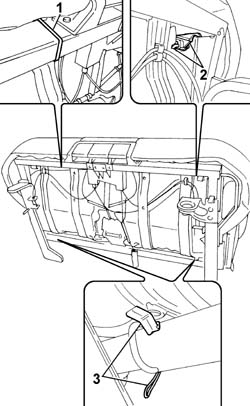
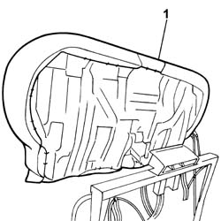
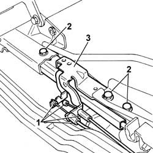

7050A50 GUIDES for moving rear seat - R.R. with seat removed
- Path
- Procedures > 70 FITTINGS > 7050 REAR SEATS > 7050A rear seat assembly > 7050A50 GUIDES for moving rear seat - R.R. with seat removed
- Kind
- repair procedure (removal / refitting; the operation number is the code)
- Applies to
- all engines; all production periods
- Interactive page
- https://sloeber94.github.io/elrnDB-fPnd/en/#/2753270
Applies to: all engines; all production periods
 Removing
Removing
 Refitting
Refitting1. With the seat at the bench and resting on a clean surfact to avoid staining the fabric, cut the two plastic bands.
2. Release the upper fastening clips.
3. Release the lower fastening clips.

Applies to: all engines; all production periods
1. Remove the single cushion assembly from the frame, also releasing it from the rear seat belt rods.

Applies to: all engines; all production periods
1. Disconnect the seat sliding cables from the housing in the guides.
2. Undo the retaining bolts.
3. Remove the guides from the cushion frame.

Applies to: all engines; all production periods
Refitting
RemovingFit the guides in the cushion frame housing.
Tighten the guide fixing bolts to torque.
Connect the seat sliding cables in the housing in the guides and in the release devices.
Working on the handle assembly, check the operation of the release devices and the sliding of the guides.
Fit the single cushion assembly in the housing on the frame, taking care to position the rear seat belt rods correctly in the housings in the actual cushion.
Attach the upper and lower cushion clips to the frame.
Using new plastic bands, fasten the cushion to the frame near the handles for moving the seat.